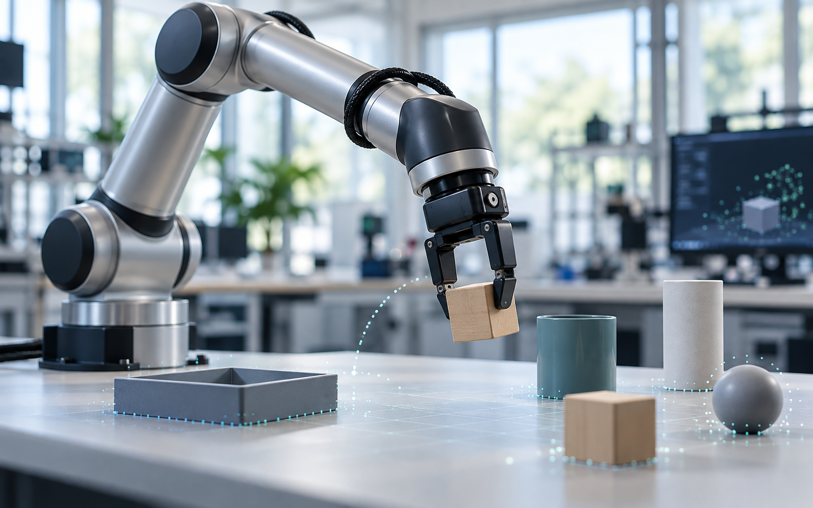
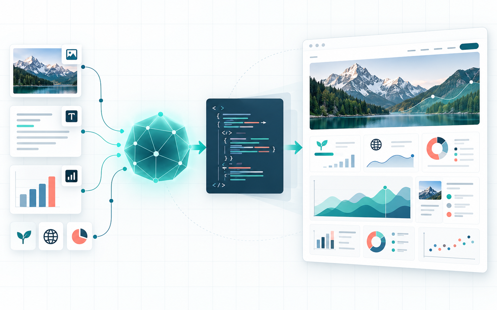
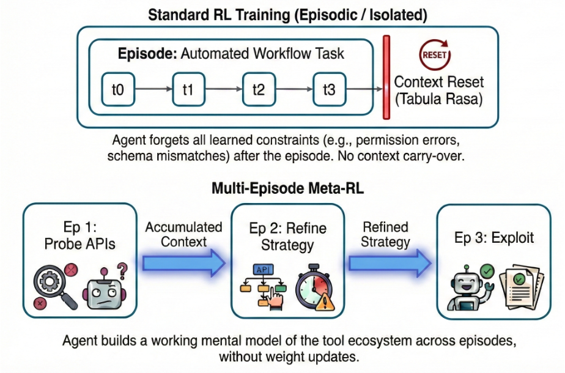
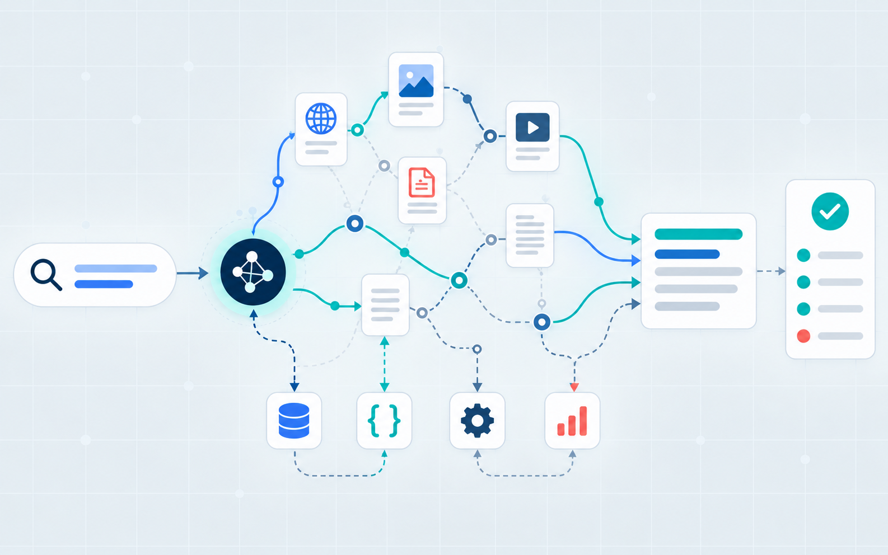
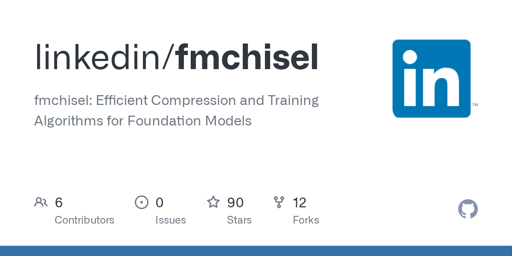

Agent as a Policy for Physical AI
Project · release soon
I am a Research Scientist at Luma AI, where I work on post-training and agentic systems for multimodal and physical AI. My current work includes an agent-as-policy framework for robotic manipulation and a multimodal design agent for infographic generation.
Previously, I worked on Foundation AI at LinkedIn, focusing on cross-episode meta-RL, tool-use search agents, preference optimization, on-policy distillation, and efficient production LLM systems. I am especially interested in LLM agents, post-training, and efficient model training and inference.

Project · release soon

Post-trained a VLM with RL to generate polished HTML infographics and developed a reward model aligned with human aesthetic preferences.

Improved how LLMs learn from context and adapt across episodes using cross-episode reinforcement learning.

Graph-based query and answer generation, rubric-based evaluation, and agentic RL training in verl.

Luma AI
Research Scientist, Foundation Models
LinkedIn
Senior / Staff Research Engineer, Foundation AI
LinkedIn
Machine Learning Engineer, Ads Ranking
Carnegie Mellon University
M.S. in Computational Data Science, 2021
Zhejiang University
B.E. in Software Engineering, 2019